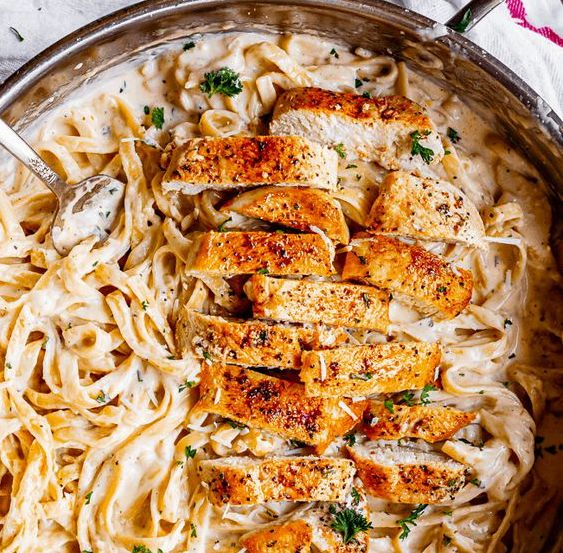

Chicken fettuccine alfredo

Creamy chicken alfredo pasta that make your taste buds dance
This recipe doesn't even compare to store bought alfredo sauce. It's so
flavorful and garlicy it will make your mouth water. So quit wasting your money on
jared sauce or going to a restaurant where the sauce is frozen and just reheated.
Also kick your diet out the door because this is filled with butter and is not
healthy in anyway. So what are you waiting for , start cooking!
Ingridients
For the chicken
- 2 large chicken breasts, 1.5 pounds
- 1 & 1/2 teaspoons kosher salt
- 1/2 teaspoon black pepper
- 1/4 teaspoon smoked paprika
- 2 tablespoons oil, vegetable, canola, or light olive oil
- 1 tablespoon butter
For the fettuccine
- water
- 1 tablespoon kosher salt, for pasta water
- 12 ounces fettuccine
- For the Alfredo sauce
- 3/4 cup butter, 1 and 1/2 sticks
- 5 cloves garlic, smashed and minced
- 2 cups heavy cream
- 1 & 1/4 teaspoons kosher salt
- 1/2 teaspoon black pepper, or more to taste
- 1/8 teaspoon cayenne pepper, adds flavor not heat
- 1/8 teaspoon nutmeg
- 1 & 1/2 cups FINELY shredded block Parmesan cheese
To garnish
- extra parmesan cheese, to garnish
- chopped parsley, to garnish
Steps
- Prepare the chicken. Use a sharp knife to slice each chicken breast in half horizontally,
to create a thin cutlet. Start at the thick edge of the chicken breast. See photos.
You should end up with 4 thin pieces of chicken that are the same shape as a chicken
breast, just thinner.
- In a small bowl, combine 1 and 1/4 teaspoons salt, 1/2 teaspoon pepper, and 1/4
teaspoon smoked paprika. Pat the chicken with paper towels on both sides until it
is very dry. Sprinkle the spice mixture all over the chicken on both sides, and rub in.
- In a 12-inch saute pan over medium high heat for at least 3 minutes.
When it is hot, add 2 tablespoons oil. Swirl to coat. The oil should shimmer right away.
- Carefully place the chicken in the pan. Once it touches the pan you can't move it,
so arrange accordingly. Do not crowd the chicken. If your pan isn't big enough, do it
in batches. Do not touch, poke, or move the chicken at all. It needs to
stay put to get a nice sear.
- Once all the chicken is in the pan, lower the heat to medium. Cook the
chicken for 3-4 minutes. If you try to flip the chicken and it sticks to
the pan, it's not ready to turn.
- Use tongs to flip each piece of chicken, swirling the pan as necessary
to coat with oil. Immediately add 1 tablespoon butter to the pan and swirl
the pan as it melts. (The butter helps the chicken to brown, and brings flavor.)
Cook the chicken on the second side for about 2 minutes, until the other side is
a deep golden brown and a meat thermometer registers 160 degrees F. Remove the
chicken to a plate and cover to keep warm. Leave all juices in the pan.
(Turn the heat off if you're not ready to make the sauce yet)
- Meanwhile, cook the fettuccine. Fill a 3 quart pot with water. Add 1
tablespoon kosher salt and bring to a boil over high heat. When it is
at a rolling boil, add 12 ounces of fettuccine. Stir occasionally so the
noodles don't stick to each other. Cook for about 10 minutes, until the
noodles are al dente (don't over cook!) Drain the noodles, but be sure to
save about a cup of the pasta water. Set it aside in a small bowl. Then add a
drizzle of olive oil to the noodles and stir so that they don't stick to each
other. Set aside.
- Make the alfredo sauce. In the same pan that you cooked the chicken in,
add 3/4 cup butter (1 and 1/2 sticks) over medium heat. Let it melt and bubble
a bit (don't let it brown), then add 5 cloves of smashed and minced garlic.
Saute the garlic for 1 minute until fragrant.
- Slowly add 2 cups of cream while stirring. Take your time. Add 1 and 1/4
teaspoons kosher salt, 1/2 teaspoon black pepper, 1/8 teaspoon cayenne pepper
, and 1/8 teaspoon nutmeg.
- Let the cream mixture cook over medium heat for about 2-3 minutes until
you see gentle bubbles on the side of the pan. Do not bring to a full boil;
your sauce will break (meaning it will look curdled instead of smooth).
Lower the heat to medium low.
- Finely shred 1 and 1/2 cups parmesan cheese using the finest grater.
I do not recommend using pre shredded parmesan (and definitely not the powdered stuff).
Pre-grated cheese will not melt as well, and your sauce will be clumpy.
- Add the cheese to the sauce just a few tablespoons at a time. Sprinkle some
in and stir for a bit to help it melt, then add a bit more cheese, stir, etc.
This will help the cheese to melt more thoroughly, making a smooth sauce.
- Once all the cheese is added in, taste the sauce and adjust seasonings as you like.
- Add the noodles in batches so that it all gets coated well in sauce.
Add in about 1/3, stir to coat, the next 1/3, and so on.
- Use a sharp serrated knife to slice the chicken into strips
against the grain. You can either plate the pasta and arrange the
chicken on top to serve, or add the chicken to the pasta in the pan and stir it all together.
- If you have a wait a few minutes before serving, keep the heat on low and cover.
The sauce will continue to thicken as it sits, so to loosen it just before serving,
add the reserved pasta water a couple tablespoons at a time, stirring well.
- Top each serving with extra parmesan cheese and a sprinkle of parsley!
Homepage